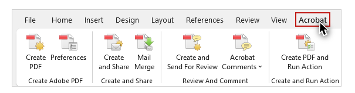
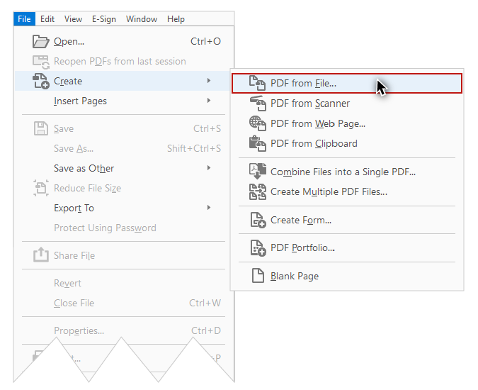

Video
Guide
Creating PDFs: Part 1
Now that you know how to create Word and PowerPoint documents that are optimized for accessibility, there may be times when you will want to provide a document as a PDF. In this video I’ll explore some factors to consider before providing a PDF file. Then I’ll briefly introduce two ways to create PDFs through Acrobat Pro DC: using the Acrobat tab in Word or PowerPoint, or using the Acrobat program itself. In Part 2 I’ll demonstrate the step-by-step processes for both of these methods.
Objectives
- Describe two advantages and two disadvantages of PDF files.
- State two recommended methods for creating PDFs.
Advantages and Disadvantages of PDF files
PDFs have some advantages over Word and PowerPoint files due to their ability to provide more robust accessibility information for assistive technology users. For example, document structure can be added to tables to provide better support for screen reading software. PDFs also display and print more consistently across platforms and device types.
However, you should consider the costs and effort associated with creating PDFs. Many electronic documents will need to be modified at some point. Creating a new PDF each time the source document changes adds an extra step. This process also requires some expertise and paid software.
Creating PDFs with Acrobat
When starting with well-structured Word and PowerPoint source documents, Acrobat is the best overall tool to create a PDF that is optimized for accessibility. There are three Adobe programs that have “Acrobat” in their name:
- Acrobat Reader: A free program that can view PDFs
- Acrobat Standard: A paid program that adds the ability to create PDFs that maintain the accessibility information of a source document
- Acrobat Pro: A paid program that adds the ability to review and optimize the accessibility information of a source document.
We use Acrobat Pro DC in this course, so you will need this version installed, and from this point forward all references to “Acrobat” refer to Acrobat Pro DC.
Acrobat tab in Word or PowerPoint
When you install Acrobat on your computer, Adobe will also install an add-in that allows you to create a PDF without leaving Word and PowerPoint. You will know that this add-in––called Acrobat PDF Maker––is installed when you see the ACROBAT tab on the application’s ribbon:

The process for creating PDFs with the Acrobat tab is basically the same for Windows and Mac, on Word and PowerPoint. For Mac users, there is a one-time setup that is required to enable Adobe’s Create PDF cloud service.

If you are on a Mac, be sure to watch the Mac Users: Enabling Adobe Create PDF video before moving on to Part 2.
Create PDF within Acrobat
You can also create a PDF within Acrobat itself. To do this, select File > Create > PDF from File. 
The PDF will be the same as if you had created it using the Acrobat tab in Word or PowerPoint.
Methods to Avoid
There are two methods for creating PDFs that we do NOT recommend.
Print to PDF
First, during the process of printing a document, you may have noticed an option to Print to PDF.
NEVER do this if your end goal is a document that is optimized for accessibility. PDFs created through the Print process will only preserve the text and images—the structural information will be lost.
"Save As" PDF
Second, when saving a file in Word or PowerPoint, you can choose from many different file types—including PDF.
We do NOT recommend creating PDFs in this way. Some of the accessibility information may not be presented correctly, and these PDFs are often harder to review and repair in Acrobat Pro.
Now that you have an understanding of the general principles and processes, you are ready to learn how to create PDFs in Word, PowerPoint, and Acrobat.